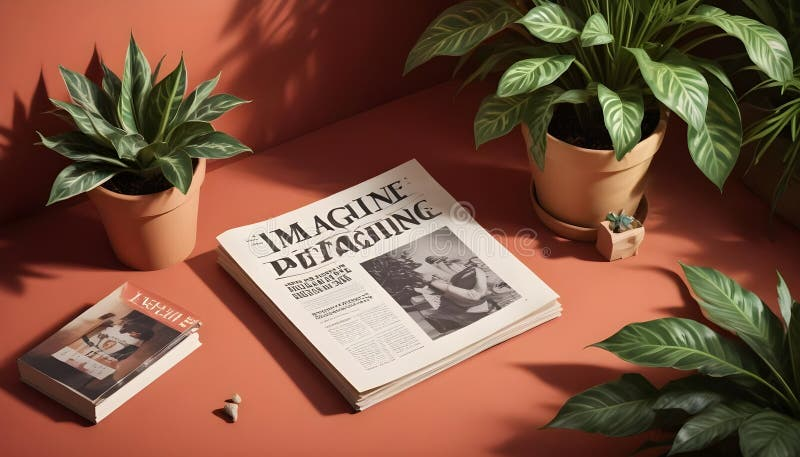

How to prepare a manuscript for peer review
Six practical checks that make your submission clearer, more complete and easier for reviewers to assess.
Discuss your submissionInsights from UK Academic Publishing
Practical guidance for authors, reviewers and researchers.
Explore useful ideas to help you prepare stronger manuscripts and navigate the publishing journey with confidence.
Six practical checks that make your submission clearer, more complete and easier for reviewers to assess.
Discuss your submission
From the title to the conclusion, learn how structure and plain language can strengthen your message.
Explore our journals
Good metadata, accessible writing and consistent sharing help valuable research reach the right audience.
View publishing services